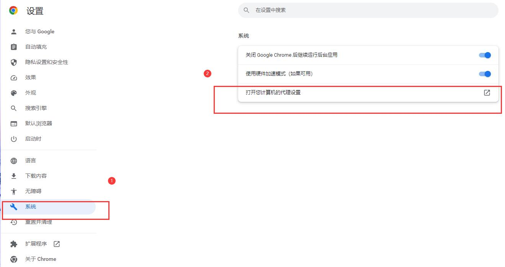
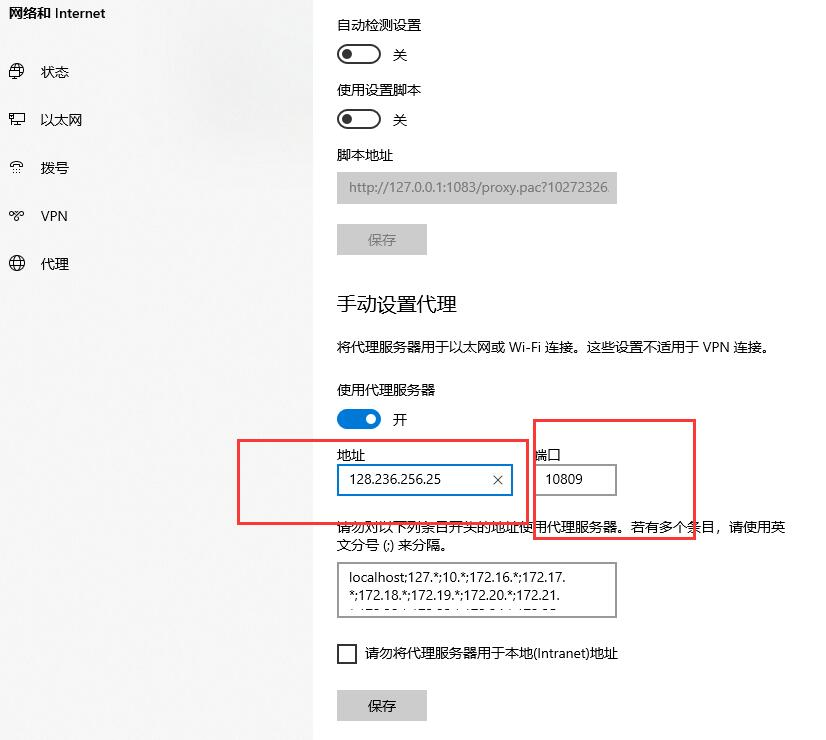
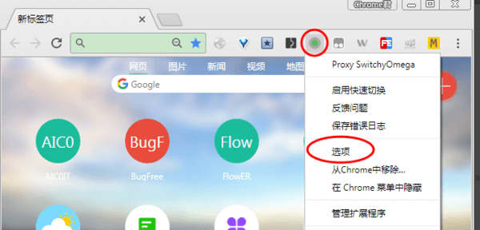
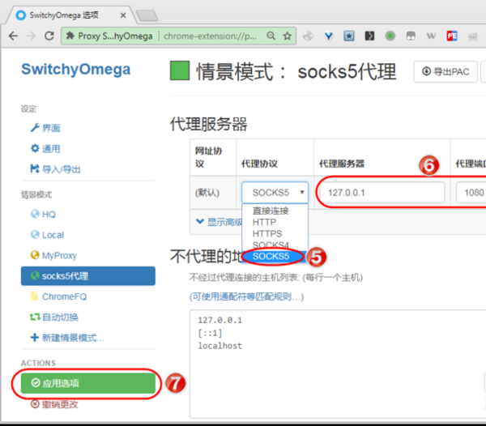
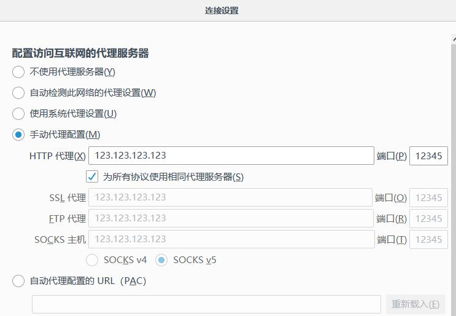

Using a static residential proxy on the local computer can hide the user's real IP address, thereby improving privacy protection and preventing personal information from being tracked and leaked. Socks5 static residential proxy can help users break through regional restrictions and access some restricted websites and services, such as social media that cannot be accessed in certain countries.
Sometimes users may encounter some servers in remote locations or with a particularly congested network, which will result in slow access. Using Socks5 static residential proxy can help users speed up network access, especially some web pages that require large traffic such as videos and pictures, and using proxy server cache can save the connection time between the client and the server.
Bad elements may obtain user IP addresses through various channels, and even carry out network attacks and intrusions. The use of static residential proxy can effectively prevent these attacks and enhance network security.
In general, using Socks5 static residential proxy can increase network anonymity, remove restricted access, speed up network access, and improve network security.
Advantages of using Socks5 static residential proxy
Hide real IP address: When you connect to a Socks5 static residential proxy server, your web traffic is routed through another IP address, thus hiding your real IP address. This increases your privacy and security, preventing criminals from stealing your personal information or tracking your online activity.
Improve access speed: Since the Socks5 static residential proxy server is located in a specific area, choosing a proxy server closer to your area can improve your access speed and shorten the response time.
Allow Access to Restricted Websites: If you are using a public Wi-Fi network, you may encounter problems that some restricted websites cannot be accessed. Using a Socks5 static residential proxy can allow you to bypass such restrictions and access these websites while remaining anonymous.
Provides better security: Socks5 static residential proxy provides 128-bit AES encryption, some other protocols only provide 64-bit encryption, especially for sensitive data Timely encryption of transmissions is advantageous.
Local browser uses Socks5 static residential proxy method
There are the following situations and methods for setting Socks5 static residential proxy, you can check which one is more suitable for you!
Method 1: In the case of local domestic network
In the upper left corner of Google browser, click - Menu - Settings

Click "System" - open your computer's proxy settings
Set the proxy IP address and port in the pop-up window
Enter the address in the browser, and then pop up a window to set the proxy ip account and proxy ip password

Method 2: Install the proxy plug-in SwitchyOmega on a foreign network
Online installation
From the Chrome Store to install, if you can't install from this link, please use the offline install below.
Offline installation
①Go to Github to download the latest version and install it package
②. After downloading the installation file, enter chrome://extensions in the Chrome address bar to open the extension, and drag the SwitchyOmega installation file with the suffix .crx to
the extension to install in. (If you can't install it directly, please open the developer mode, unzip the .crx file and add it)
1. Upgrade Chrome to the latest version;
Second, install the SwitchyOmega extension;

3. Open the SwitchyOmega extension option settings, right-click the SwitchyOmega extension icon, and click "Options" in the drop-down menu to enter the SwitchyOmega extension option setting function.

4. Add socks5 proxy scenario mode, click "New scenario mode..." in the above picture, enter the socks5 proxy name in the new scenario mode name, select "Proxy Server", and click the "Create" button.

5. Set the socks5 proxy scenario mode, select "socks5" as the proxy protocol, enter the address and port of the socks5 proxy server, and click the "Apply Options" button to apply the settings.

Method 3: Use socks5 proxy IP on Firefox browser
1. Open the Firefox browser, click "3" on the menu bar in the upper right corner, and then click "Options";

Second, find "Network Settings" and click "Settings";

3. Then select "Manual proxy configuration", and then fill in the proxy ip address after the HTTP proxy (x), fill in the proxy port number after the port, and then select "Use the same proxy server (s) for all protocols" according to the requirements, Choose SOCKS v4 or SOCKS v5 according to your needs;

4. Then click "OK" to configure the proxy.

The above are the methods of using socks5 proxy IP on the two browsers. Unfortunately, the two browsers do not support socks5 proxy IP authorized by account password.
Introduction to the Best Socks5 static residential proxy Provider
Using Socks5 static residential proxy can increase network anonymity, remove restricted access, speed up network access, and improve network security. Here are some excellent Socks5 static residential proxy providers:
| Proxy-seller
The cheapest Socks5 static residential proxy provider |
$2.91/month From 1 - $2.91/month / 100 up- $2.45/month |
Go to Proxy-seller official website |
| Proxy IPv4
Local Socks5 static residential proxy provider |
$1.425/month From 10 - $14.25/month / 100 up- $112.5/month |
Go to Proxy IPv4 official website |
| IPRoyal
The most stable and reliable Socks5 static residential proxy provider |
$3.00/month From 1 - $3.00/month / 100 up- $2.68/month |
Go to IPRoyal official website |
| HypeProxy.io
Super fast Socks5 static residential proxy provider |
$4.20/month From 1 - $4.20/month / 100 up- $4.00/month |
Go to HypeProxy official website |
| Geonix (formerly Proxysale)
Socks5 static residential proxy provider for local tyrants |
$4.5/month From 1 - $4.50/month / 100 up- $4.20/month |
Go to Geonix official website |
| Proxy Cheap
Socks5 static residential proxy provider with high security |
$3.49/month From 1 - $3.49/month / 100 up- $3.20/month |
Go to Proxy Cheap official website |
| Shifter
Need social media Socks5 static residential proxy provider |
$3.00/month From 25 - $3.00/month / 100 up- $2.85/month |
Go to Shifter official website |
What are the benefits of using Socks5 static residential proxy?
After combining Socks5 static residential proxy, the following advantages will be obtained in the local browser:
Improve privacy protection: Using a static residential proxy can hide the user's real IP address, thereby improving privacy protection and preventing personal information from being tracked and leaked.
Break through restricted access: Socks5 static residential proxy can help users break through regional restricted access and access some restricted websites and services, such as social media that cannot be accessed in certain countries.
Accelerate network access: Sometimes users may encounter some servers in remote locations or with particularly congested networks, which will result in slow access speeds. Using Socks5 static residential proxy can help users speed up network access, especially some web pages that require large traffic such as videos and pictures, and using proxy server cache can save the connection time between the client and the server.
Preventing hacker attacks: Unscrupulous elements may obtain user IP addresses through various channels, and even conduct network attacks and intrusions. The use of static residential proxy can effectively prevent these attacks and enhance network security.
In general, using Socks5 static residential proxy can increase network anonymity, remove restricted access, speed up network access, and improve network security.